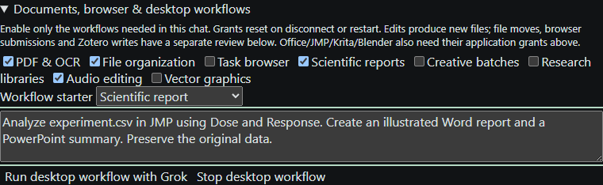
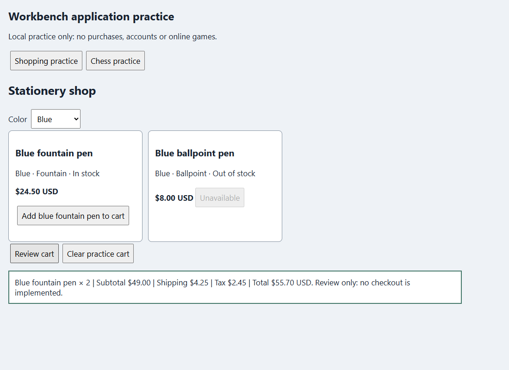
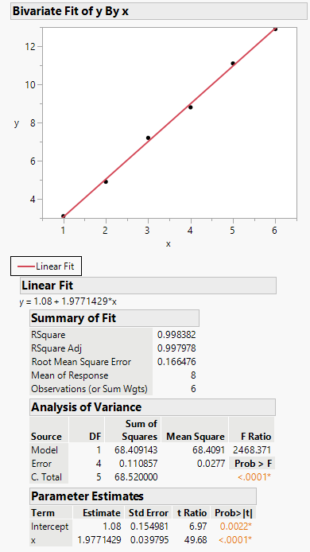
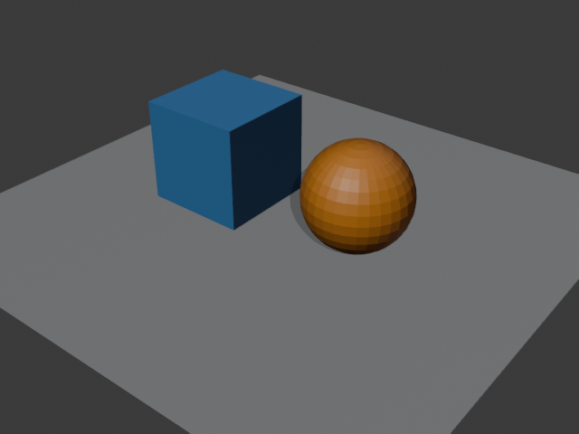
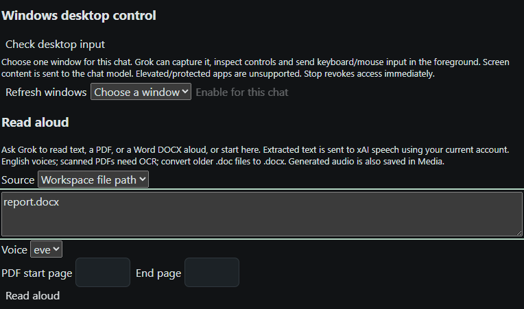
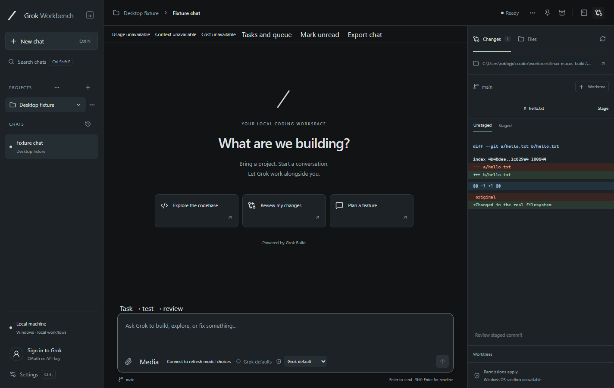

Windows
Windows 10/11 · x64
A portable executable. Keep Grok Desktop Data beside it when moving or
updating the app.
DESKTOP · OPEN SOURCE · 0.9.0 ALPHA
New in v0.9.0 Desktop useCode with Grok, then put it to work across your Windows desktop. Prepare documents, analyze data, create scene starters, and listen to your PDFs and Word files.
Windows x64 · Experimental Linux x64 · UNTESTED Mac builds
Release notesSHA-256 checksums
NEW IN V0.9.0 / DESKTOP USE
Enable the tools you need for a chat. Choose a window for mouse and keyboard control, or use workflows for your installed applications.

VERSION 0.9.0 · ALPHA
One app, with the Grok engine included. Pick the build for your computer.
Windows 10/11 · x64
A portable executable. Keep Grok Desktop Data beside it when moving or
updating the app.
Ubuntu 24.04 · x64
Debian package and archive. Automated headless desktop checks cover the packaged app; other distributions need volunteer testing.
Apple Silicon or Intel · macOS 13.0 minimum declared
Desktop behavior is UNTESTED until volunteer validation. Ad hoc signed; no Apple notarization. macOS may block launch.
Linux and Mac updates are manual. Native session pruning/restoration and Windows Sandbox preparation are unavailable on these experimental platforms. See platform notes and the volunteer checklist.
ONE CHAT / MORE WAYS TO WORK
Start with a bounded task, inspect the result, and keep the files you create.

Prepare forms, compare products and check cart totals. Preview file organization before applying it, or practice legal chess moves on an offline board.

Edit new Word, Excel and PowerPoint copies. Fill or split PDFs, extract text with OCR, and turn CSV/XLSX data into JMP graphs and illustrated Office reports.

Create Blender scene starters, work on new Krita canvases, and run approved local ComfyUI workflows. Export editable SVG diagrams, trim audio, or organize CSL/RIS research notes.
YOUR DOCUMENTS / READ ALOUD
Ask Grok to read text, a PDF, or a Word DOCX aloud. Listen in Workbench and keep the generated narration in Media. Scanned PDFs can use the OCR workflow first.

Screenshots use isolated test projects and synthetic data. These are bounded demonstrations; arbitrary app workflows, real retailer checkout and online game play are unvalidated. See the validation record ↗
A PLACE TO BUILD
Your conversation and your code, side by side.

Organize projects and conversations, attach files or screenshots, and follow Grok’s tool activity as it works.
Edit files in the built-in Monaco editor. Inspect Git diffs, stage changes, and review a commit before pushing.
Use terminals, MCP servers and worktrees, plus opt-in Office, PDF/OCR, scientific reporting, creative, research, audio and vector workflows. Grok Build 1.0.45 stays built in. Workflow setup and limits. Windows application integrations require installed apps; Mac desktop use remains UNTESTED.
QUICK START
No separate Grok CLI installation.
Just the app and a project to work on.
Choose the package for your platform above. On Windows, save
Grok-Workbench-0.9.0-Portable.exe in a writable folder and open it. On
Ubuntu, install the .deb. Mac builds are UNTESTED; read the platform
notes before volunteering.
Click Sign in to Grok above Settings. Complete Grok OAuth sign-in in your browser, or save an xAI API key in the app. Model requests need internet access and account access/billing.
Use the + beside Projects to choose a local folder, then start a chat. Install Git and your project’s development tools for the workflows that need them.
Send a prompt like this:
Explain how this project is organized and suggest one small improvement. Wait for me before changing files.
Respond to project-trust and tool-approval requests above the composer. Inspect any edits in Changes; use Stop turn to cancel.
Keep your workspace with you. Windows portable data lives in
Grok Desktop Data beside the executable. Move both together. Encrypted API
keys may need re-entry on another PC or Windows account. Linux and Mac use their system
application-data folders; preserve those folders during manual updates.
Choose permissions thoughtfully. Terminals and project actions run with your user permissions. Approval choices control tool requests; Grok’s OS-level agent sandbox is unavailable on Windows. Agent isolation on Linux and Mac remains unvalidated. About isolation
READY WHEN YOU ARE